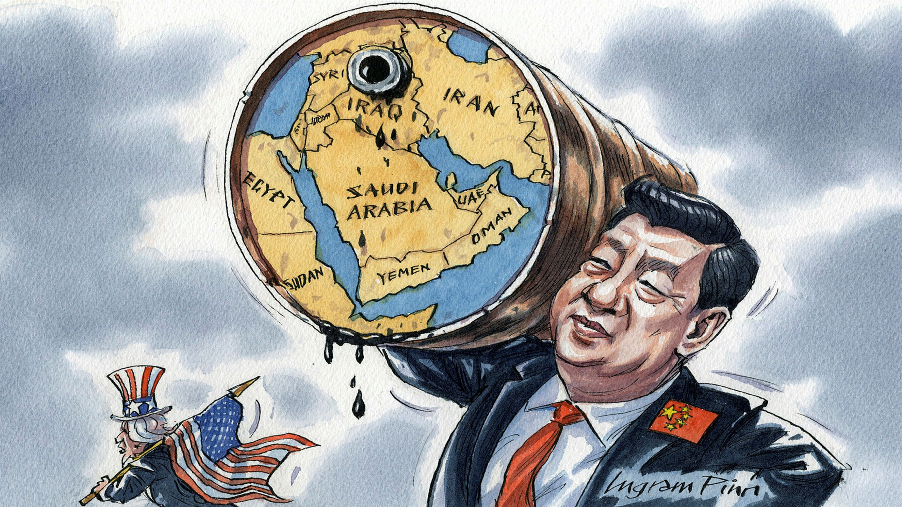
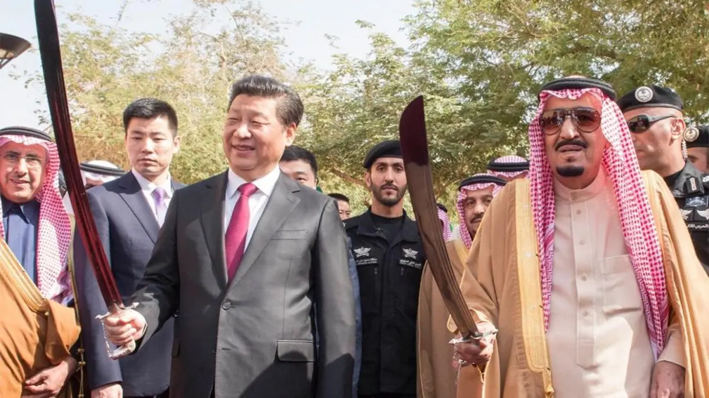

China and the Middle East

China has increased its engagement with the Middle East (ME) in recent years. But before we can discuss China’s role in the ME, it’s important to briefly outline a framework underpinning the analysis presented here. Entire books are normally dedicated to this task, but I’ll try and summarise a framework in a few sentences. The assumption made here is that everything in the world can be understood through the prism of great power politics. The international system has certain configurations that help shape events across it. Currently the configuration of the international system is unipolar, meaning the US is the sole superpower in it with no rival that’s equal in power. Power here is mainly military, but the size and strength of a country’s economy and the stability and soundness of its political system are also vital elements of projecting power.
Balance of power theory dictates that power will always be balanced, and thus the international system is heading in the direction of becoming bipolar where two equally powerful countries dominate the system (like the US and USSR in the cold war).
China is the ascending country trying to claim that position against the US. China is still not even close to reaching this point but the speed of its rise makes it the only potential candidate for this position in the foreseeable future. Of course China claiming this position in the international system will not happen overnight. It’s hard to know how close China is right now to achieving that objective. This is because measurement of state power is a complex endeavour. That said, it’s very likely that we will see an event such as military intervention in Taiwan that will signal China’s readiness to officially assume the role of a challenger to the US in the international system and usher in a new era in international politics.
Now let's go back to the subject of this blog. China has increased its political, economic and security engagements in the Middle East (ME) in recent years, just as the US decided to withdraw from the region. This shift taking place in the Middle East is due to two main reasons:
- The US used to import millions and millions of oil barrels from Saudi Arabia on a daily basis only a couple of decades ago. Today, the US is almost energy self-sufficient and is on course to becoming an exporter of oil by 2030. In contrast, half of China’s crude oil imports today come from the ME. China is growing rapidly, and this growth can’t happen without oil.
- As part of a strategy to contain the rise of China, the US seems to have decided to take the competition close to China, the so-called “pivot to Asia”. However, China seems to be using the gap created by the US to bolster its relations with ME countries and secure that much needed fuel for its economy.
In return for energy, China is offering ME countries development in the form of infrastructure projects and increasingly military cooperation. Sounds straightforward doesn’t it? But nothing ever is in the ME. China faces significant challenges trying to keep everyone happy in a region ravaged by conflict and rivalry. The longer China remains in the region and the deeper its involvement becomes, the harder it becomes for it to remain everyone’s friend, and this is assuming the US doesn't get sucked into the region again.
When China reaches a position where it can challenge US power and the world becomes bipolar again, every region in the world will be important, including the Middle East. This was the case during the cold war when the USSR supported countries like Syria and Egypt and the US tried to counter balance by supporting Israel.
It’s very likely that this will happen before the end of this decade, and it will then be in the US interest to try and stop the flow of oil from ME to China as the Second Cold War erupts between China and the US. Energy is a vital element to how and whether any state can project power on the international scene.
Given the above analysis, what does this mean for China’s role in the ME and the challenges it faces?
Politics in the ME is complex but can be simplified using the concept of balance of power regionally. There are three main powers in the ME and two (main) opposing camps. The three main powers are Iran, Saudi Arabia and Israel. The two camps are Iran and its satellites on the one hand (including Iraq, Syria, Hizbulla in Lebanon and the Hothis in Yemen), and the anti-Iran camp on the other (comprising Saudi Arabia, UAE and Israel). Although Saudi Arabia and Israel have a mutual interest in checking Iran’s influence in the region, they are not natural allies, and they disagree fundamentally on a lot of things, especially on Palestine.
Such regional dynamics combined with the international dynamics of the Second Cold War will have significant ramifications for the region and for the two superpowers in the international system.
What does it mean for Saudi Arabia?
As discussed above, one of Saudi Arabia’s top objectives in the region is to check Iran’s power. To be able to do that, Arabia needs to sell its oil to get the money needed to achieve this objective. Given that the US is now almost self-sufficient when it comes to energy, Arabia has no other alternative but to go to China. Already, the Sino-Arabian relations have changed significantly in the last few years, with Arabia now considering taking payments for oil in Yuan instead of US Dollar.
Now this could be a strategy devised by Saudi policy makers to focus US attention on the region again, but this could become a dangerous strategy as it won’t be easy for Arabia and China to break ties after years of cooperation. Whether Arabia plans a fully-fledged and deep alignment with China or it's trying to attract US attention is something we will only know years in future when documents about this and accounts by people involved are made public.
For now the US seems to be OK with Saudi Arabia providing China with huge amounts of oil, but there will come a point when the US asks Arabia to pick sides and stop the flow of oil to China. The US could of course offer to buy or find a replacement buyer for Saudi oil, but this can only be an option if the extent of China Saudi relations was limited to the economic realm and no security agreements were in place between China and Saudi Arabia by the time the US decides to intervene.
Energy is a vital element in any superpower's efforts to project force abroad. Chinese security presence is likely to follow economic dependence on Saudi oil as China will not deem it wise to leave shipments of oil from Arabia unprotected. When this happens, Arabia will have an important choice to make about which direction to go.
Arabia’s decision on who to align with will have a significant impact on its objectives in the region. Arabia could benefit from aligning with the US if US policy makers had the same vision Henry Kissinger had in 1973 when the US supported Israel against Syria and Egypt in the 1973 war to weaken the USSR and to convince USSR proxies that the USSR is not a reliable patron. But if Arabia was to align with China, it would find itself in a difficult position when it comes to countering the influence of Iran in the region. Given the deep animosity between Iran and the US, and the need for Iranian leadership to maintain this animosity for domestic reasons, Iran is most likely to be allied with China for the long term. This means China will be working very hard to manage the rivaliry between two important allies of hers and the two main providers of oil in the region; Arabia and Iran (and its satellite Iraq). Arabia could find itself unable to take some decisions that might disadvantage Iran under pressure from China if Arabia decided to side with China, and in the case of a failure by China to stop a war starting in the region, Arabia is likely to find itself on its own as China will be reluctant to back it against another of its allies, Iran.
Given this, Arabia should try and mend relations with the US. Aligning with the US would only be possible:
- If an alternative buyer to Arabia’s oil can be found (by the US?).
- If the US decides to re-engage in the region before relations with China deepen to a point where it becomes hard for Arabia to untangle itself from China.
If Arabia wants to keep its options open, it needs to make sure its relationship with China doesn’t get too deep that even if there was American will to attract Arabia away from China’s orbit, it would be hard for Arabia to break its ties with Beijing. Arabia should leverage the analysis presented here to convince the US to act before it’s too late. As mentioned above, China will need some military presence in the area to ensure oil shipments. This should be the point where Arabia gives the US the choice as there would be no coming back from this.
What does it mean for Iran?
Iran has signed a 25 year agreement with China that reportedly involves discounted oil shipments to China in return for infrastructure investment and military and security assistance. US Sanctions on Iran have crippled its economy and so a huge buyer for its oil will shore up Iranian coffers at a time of great need.
There is no doubt Iran, like any other state in the region, will try to use everything at its disposal, including the alignment with China and the great power clash, to advance its interests in the Middle East. It makes sense from Iran’s point of view to align with China given that the US is not an option. That said, the US saw the demise of many superpowers over the past century or so including Imperial Germany, Nazi Germany, and the Soveit Union, so it might still be the losing side Iran is backing even if it’s the best strategy to pursue at present.
What does it mean for Israel?
Israeli officials have proved to be astute strategists over the years. They’ve tried to stay in China’s good books by providing military and technical assistance and establishing strong economic ties with China. Israel even sold American technology to China safe in the knowledge it can always rely on the powerful Israel lobby in America to soften the blow and convince decision makers to maintain US decades long unconditional support for Israel.
Israel will no doubt continue to try and maintain relations with China in complete disregard to US interests and demands, but when China claims its position as the second superpower in the international system, and the Second Cold War is in full swing, the situation will get to a point when it's not viable anymore for Israel to remain on the fence.
The US has been the main patron of Israel since its inception. There is no doubt Israel, when pushed, will take America’s side, and Israel will continue to be the main US ally in the ME.
As was the case throughout the cold war (and after), Israel will benefit from US support in any potential confrontation with Hizbullah in Lebanon, Syria or even directly Iran.
What does it mean for the US & China?
China needs energy to continue on its path to becoming a superpower that can challenge the US in the international arena. The ME offers the chance to provide China with significant amounts of oil vital to its growth. It makes sense for China to make those deals to secure that energy. However, China faces the almost impossible task of reconciling the difference between its two biggest oil exporters in the ME, Iran and Arabia. The differences between the two countries are huge, and strong religious feelings underpin that rivalry, so when Iran requests support from its partner China that will advance its position in the ME in exchange for oil and continued alignment, Arabia, China’s other big oil exporter, will not be happy and will make sure to let China know.
China tries to stick to economic cooperation with its dealings with other countries, but it’s a matter of time before China gets militarily involved simply because no superpower would let one of its main sources of energy unprotected. When this happens China might regret ever getting involved in the ME. This is due to the historic rivalries ravaging the region and which are set to continue to prevail for years to come. China's challenges in the region will largely depend on which side of the fence Saudi Arabia ends up straddling.
The US seems to have decided to take the fight to China’s backyard focusing on Asia and leaving the ME behind. This will work in the short term, but the US is bound to come back to the ME when the confrontation with China turns into a fully fledged cold war. The US simply can’t afford to let China control a region like the ME and its resources without doing anything about it. For this reason, it makes sense for the US not to burn all bridges with Arabia. The US needs to monitor Sino-Arabian relations so as to intervene with feasible alternatives when those relations are about to enter a point of no return; mainly a deal with major military and security elements between Arabia and China.
Comments